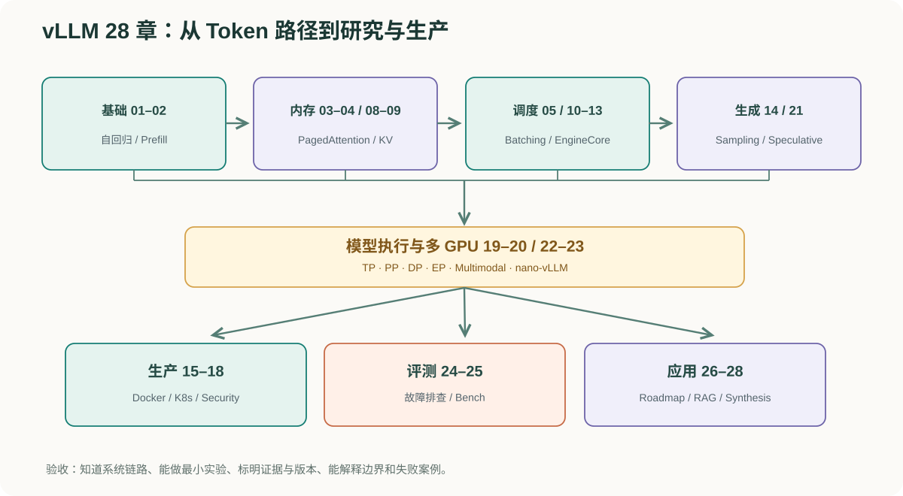

第 28 章 · 研究与工程能力
Course Synthesis：28 章形成一张知识地图
将 28 章连接为从 Transformer 数学、内存与调度，到并行、生成控制、部署、排障与 RAG 的系统能力。
学完一门推理课程后，真正的能力不是记住所有 CLI flags，而是看到一个请求/故障时能从模型、缓存、调度、GPU、网络和 API 一步步解释现象，并设计实验验证自己的判断。
学习目标
- 在脑中复原完整请求生命周期。
- 通过知识关系定位前置知识。
- 按系统、生产或研究应用目标选择学习路径。
- 用可复现 Capstone 验证理解，而非记忆术语。

28.1 28 章知识图谱：从 Token 到用户响应
课程中出现的概念其实构成一条从基础数学到生产请求的因果链，而不是 28 个相互独立的术语：
用户请求 → Tokenizer → Prefill → KV Cache → Scheduler → Decode → Sampling → Streaming把链路加上外层工程组件：API Server / Gateway 负责外部请求、认证和输出；Engine Core / Scheduler 负责预算和排队；GPU Workers / Model Runner 执行矩阵计算和 Attention；Metrics/Tracing 负责证据观察；多 GPU 通过 TP/PP/DP/EP 拓展容量/吞吐。
当前 28 篇文章按课程地图分类，核心互相依赖：01 自回归 → 03 PagedAttention → 05 Continuous Batching → 10 Scheduler → 12 V1 Architecture → 13 Lifecycle。若其中一环不清楚，先回到相应章节做最小实验。
28.2 六条主线和学习检验
| 主线 | 章节 | 应能做的事 |
|---|---|---|
| 计算与显存 | 01–04、08–09 | 算出 KV Cache 估算并画出 Block Table |
| 调度与请求 | 05、10–13 | 跟踪 Prefill、Decode、抢占、终止 |
| 生成控制 | 06–07、14、21 | 解释 Sampling、结构化输出和 Draft–Verify |
| 分布式与模态 | 19–20、22–23 | 分析 TP/PP/DP/EP 和 Media path |
| 生产可靠性 | 15–18、24–25 | 设计部署、排障、SLO 和 Benchmark |
| 研究与应用 | 26–28 | 判断成熟度，构建可验证的 RAG 实验 |
掌握一项技术不以“阅读完成”判断，而以“可以做最小实验、解释反例、给出版本和来源”为准。不同目标可按前置知识导航选择跳读路线。
28.3 三条进阶实践路线
系统与源码路线
03 PagedAttention → 09 Prefix Cache → 10 Scheduler → 12 V1 → 23 nano-vLLM。实验：固定一个源码 commit，记录一个序列的 block 分配、GPU slot mapping 和 preemption 状态。
生产运维路线
06 Quickstart → 15 Docker → 16 Kubernetes → 17 Metrics → 18 Security → 24 Troubleshooting → 25 Benchmark。实验：设计有版本、日志、负载、SLO、回滚条件的发布验收单。
研究与应用路线
14 Sampling → 21 Speculative → 22 Multimodal → 26 Trends → 27 RAG。实验：对同一负载做严格 A/B，记录算法保证、兼容性与输出质量；将有证据的 RAG 样本变成回归集。
28.4 最终 Capstone：证明一个推理服务可信
用自己有权访问的模型和 GPU，建立完整实验记录：
- 固定 model/revision、Tokenizer、vLLM SHA、Docker digest、GPU、CUDA driver。
- 对一个最小请求解释用户入口 → Prefill → KV Cache → Decode → Sampling 的内部路径。
- 设计并执行至少两组可重复负载，记录成功率、吞吐、TTFT/ITL/E2E 分位数和缓存状态。
- 为服务配置可信网关、Endpoint allowlist、请求限流与日志脱敏。
- 故意制造一个可控故障（如过小上下文预算），按 24 章流程排查，记录回滚。
- 运行第 27 章的 RAG demo 并扩展检索质量与引用评估，不把模型输出当作证据本身。
结束条件：任何一位同学都可以根据你的代码、数据、配置和命令重放实验，并得到同类型的结果；若不能重放，就不能把结果当作可靠工程证据。
28.5 课程边界与持续维护
本课程提供 28 个离线 HTML 入口，原创机制图、版本钉住的来源登记与若干教学用交互实验。它不是 vLLM 全部 CUDA kernel 的数学证明，也不是所有云 GPU 与模型的部署兼容测试。论文与工程特性会演进，所以每一轮新增内容都需要经过“官方资料搜索 → 仓库去重 → Evidence → 构建/测试 → 浏览器 → Pages”流程。
请将修正建议附带：受影响章节、上游 source/commit、可复现的反例、期望行为以及对应测试。持续维护比一次性追求更多页面数量更重要。
开始新学习循环：回到 课程地图，选择一条还不能独立解释的机制，做一次简短、能保存证据的实验。
本章自检
- 解释一次请求从输入到 Prefill、KV Cache、Decode 和流式响应。
- 如果线上 TTFT 突然上升，最先关联哪三类指标？
- TP 与 DP 对单请求时延和整体吞吐分别有什么影响？
- 请选择一条自己的实践路径，并列出可以复现的验收证据。
权威资料与证据入口
- vLLM Architecture Overview：系统模块与请求执行
- vLLM Benchmark CLI：测量边界和复现
- vLLM Production Metrics：观测指标体系
- vLLM Security：部署隔离与多租户限制
- vLLM GitHub releases：后续版本变动的追踪入口
vLLM 上游审校基线：e72fc9ae50c221180c4b8f4a94c5009714a4b199；日期 2026-11-22。发展趋势和第三方技术应随版本重新核验。